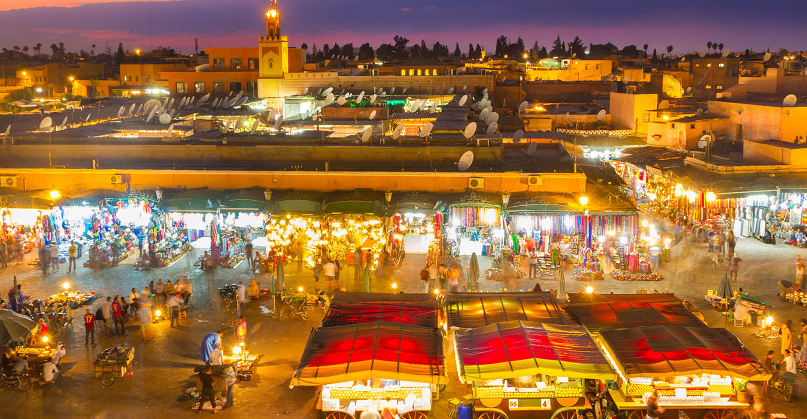
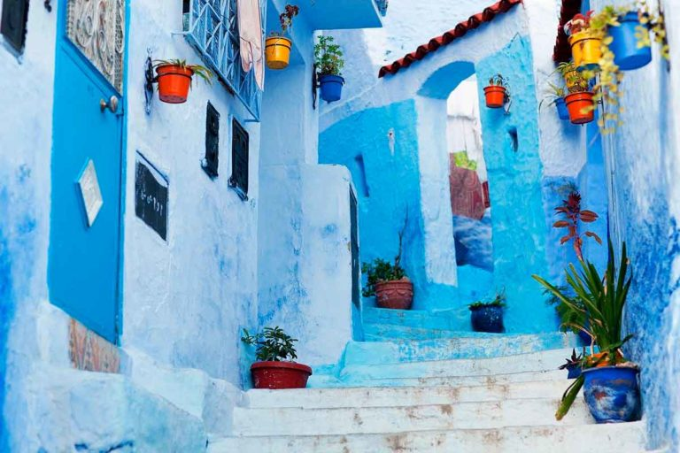
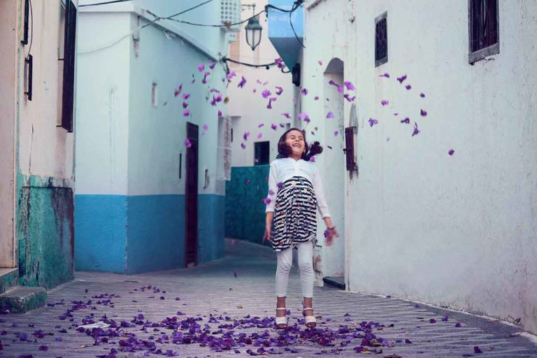
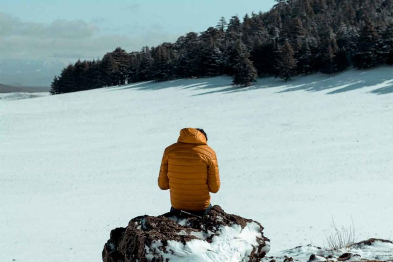
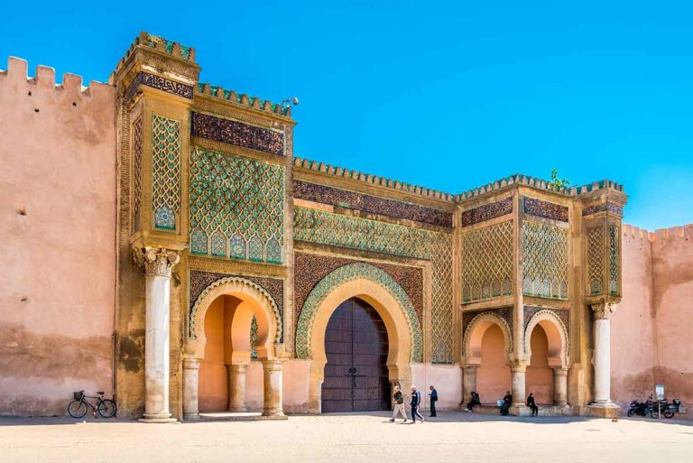

Este país debido a su vasta extensión y su rica cultura milenaria ofrece a los viajeros la oportunidad de realizar una inmersión en la vida y cultura árabe, que en algunos lugares de Marruecos pese a los adelantos aun parece inalterada. También podéis tomar el sol en paradisíacas playas, esquiar y realizar turismo de montaña, hacer senderismo, turismo cultural, degustar la gastronomía en un zoco local, comprar bellas piezas de artesanía o simplemente pasear por sus milenarias medinas. El pasado siempre está presente en este país tan diverso y colorido. Aquí os exponemos un resumen de lugares interesantes para visitar en Marruecos:
Su luz clara y limpia, sus casas blancas y azules, hacen de esta ciudad una de las mas bellas de Marruecos.Por eso es un destino irresistible para un buen número de pintores y artistas. Chaouen también denominada “La perla del norte”, es una ciudad de cautivadora belleza, a lo que contribuye su arquitectura de diseño popular mediterráneo, con los azules y añiles de sus puertas centenarias y los blancos añilados de las paredes, éstas cubiertas con capas y capas y más capas de cal. Chaouen ha sido la inspiración para muchos pintores como Eugéne Delacroix, Maria Fortuny y Henri Matisse.

Es un pequeño pueblo de la costa atlántica entre Tánger y Rabat con influencias principalmente portuguesas. Las murallas portuguesas que rodean el casco antiguo contrastan con sus casas blancas y la convierten en un destino muy popular, sobre todo en verano. La medina sigue siendo una de los más bellas y coquetas del país, siendo así un lugar perfecto y disfrutar de un agradable paseo a lo largo de la costa atlántica o de un buen almuerzo con pescado fresco y marisco.
Hoy en día, Asilah es una popular y turística ciudad costera con grandes playas de fina arena que se extienden por el Océano Atlántico dando la bienvenida tanto a turistas marroquíes como extranjeros.

Es una ciudad de Marruecos, con una población de 30 000 personas que está situada en las montañas del Medio Atlas a 1713 metros sobre el nivel del mar.Fue fundada por los franceses en 1929 y es probablemente una de las ciudades más limpias cuidadas de Marruecos. Ifrane se asemeja a una pequeña ciudad suiza, donde las calles y los jardines están cuidados al detalle. Tanto en verano como en invierno, este pueblo de montaña es un excelente punto de partida para realizar numerosas excursiones, sobre todo a la estación de esquí de Mischliffen o a sus alrededores.

Mientras Meknes es una ciudad imperial con una gran cantidad de monumentos históricos y sitios naturales, tiene más de 40 km de imponentes murallas defensivas y muchas mezquitas y es por eso que es llamada la “Ciudad de los cientos alminares” es también la ciudad más cercana a las ruinas romanas de Volubilis (Oualili).Los precios en Meknes se encuentran entre los más razonables de Marruecos y la gente es mucho más amable que en otras ciudades del país. Dentro de las ciudades imperiales es la menos visitada pero no pero ello menos interesante.

Marruecos es una nación antigua. El actual rey, Mohammed VI, proviene de la dinastía alauí, regente en el país desde el s. XVII. Anteriormente habían dejado su impronta imperios e invasores como romanos y árabes, que llevaron el islam e hicieron de Marruecos lo que es hoy. Sus vínculos con Europa, al otro lado del Mediterráneo, y con el resto de África, al otro lado del Sáhara, han dado lugar a una nación única con una historia singular.
Marruecos es un país de grupos multiétnicos con una rica cultura y civilización. A lo largo de su historia, ha recibido visitantes tanto del este (fenicios, judíos y árabes), del sur (habitantes de África Subsahariana) y del norte (romanos y vándalos), quienes han impactado la estructura social de Marruecos. En el país conviven, además, distintos tipos de religiones, tales como el paganismo, el Judaísmo, el Cristianismo y el Islam.
Cada región posee sus propias características, contribuyendo a la cultura nacional. Marruecos ha establecido entre sus principales prioridades la protección de su diversidad y la preservación de su patrimonio cultural.
Políticamente y por sus orígenes, Marruecos se trata del único país no árabe perteneciente a África[cita requerida], aunque es denominado en ocasiones como un estado arabo-bereber y en otras como un estado africano. Al menos la tercera parte de la población habla en lengua bereber. Durante la expansión islámica, algunos árabes se establecieron en las regiones marroquíes de Tadla y Doukkala. Por ejemplo, existen grupos llamados Charkawa y Arbawa que llegaron al país desde Arabia. Los Charkawa dicen descender de Omar Ibn Al Khatab.